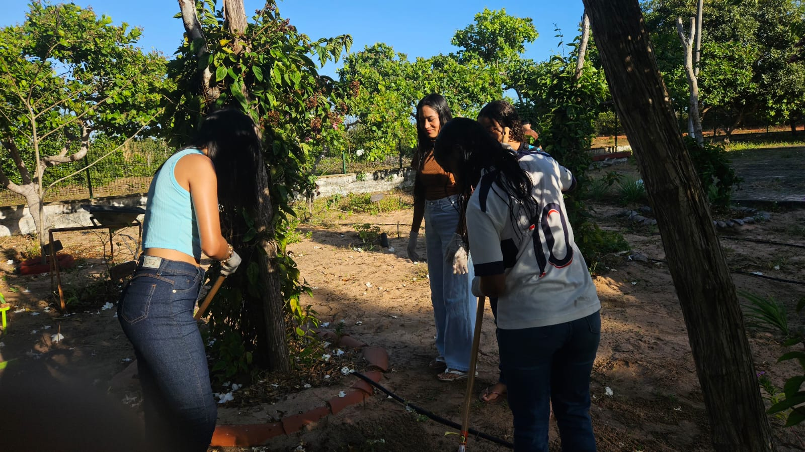
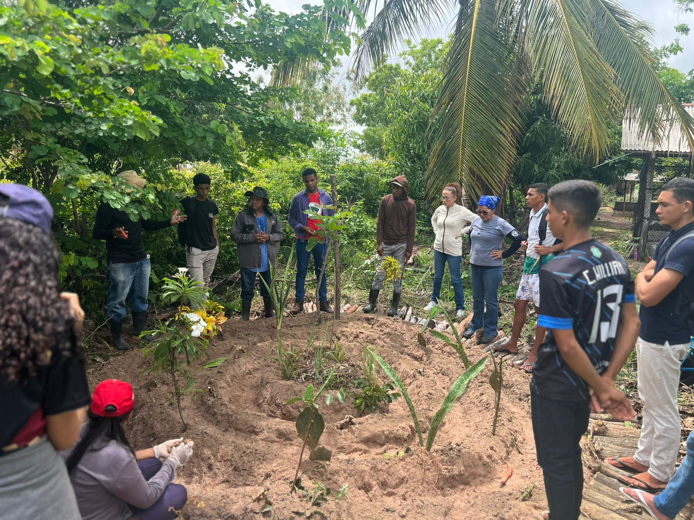
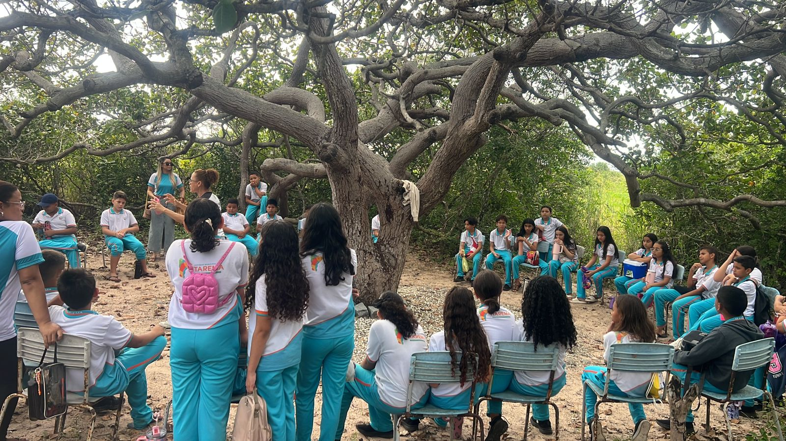
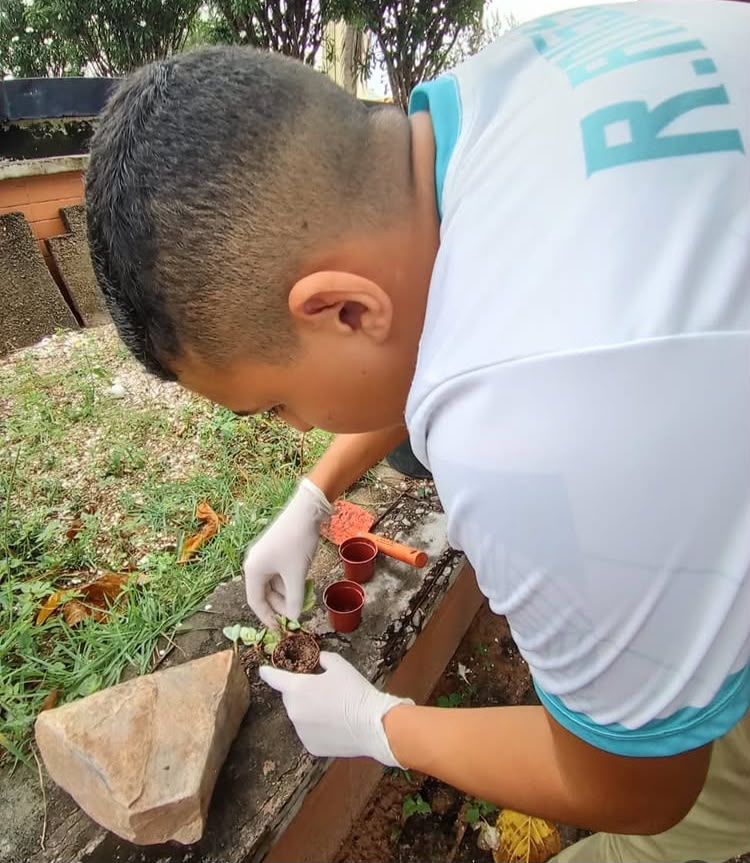
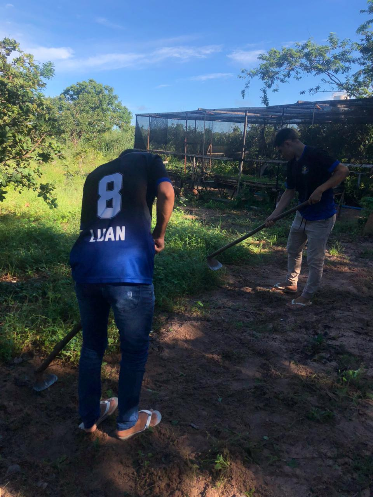

Galeria da comunidade
Rolo de fotos
Substitua os arquivos indicados por fotos reais dos estudantes, da escola, das plantações e dos eventos.





Navegação rápida
Explore o portal
Áreas pensadas para pesquisa escolar, memória local e projetos do Ceará Científico.
História
Origem da comunidade, linha do tempo e registros importantes.
Memória
Depoimentos, relatos, curiosidades e saberes dos moradores.
Produção Agrícola
Dados de cultivo, práticas sustentáveis e economia local.
Plantação Nativa
Espécies regionais, preservação ambiental e caatinga.
Plantas Medicinais
Uso tradicional, cuidados e pesquisa orientada por professores.
Assistente IA
Base preparada para chat educacional, quizzes e recomendações.
Reportagens especiais
Pesquisa, campo e tecnologia
Leituras principais do portal, produzidas para aprofundar temas do Ceará Científico e orientar pesquisas dos estudantes.
A Escola que Nasce da Terra
Uma reportagem sobre Pedagogia da Alternância, escola do campo, mística e direito de aprender sem deixar o território.
Ler reportagem → Clima e AgriculturaMudanças Climáticas Ameaçam o Futuro do Campo
Investigação sobre os impactos das emergências climáticas no assentamento e na produção agrícola local.
Ler reportagem → Tecnologia e EscolaIA na sala de aula
Uma leitura crítica sobre inteligência artificial, orientação docente, letramento digital e futuro da aprendizagem.
Ler reportagem →Atualizações diárias
Educação & Inovação
Vestibulares · Tecnologia · Agroecologia · ENEM
Próxima etapa
Inteligência Artificial educacional
O portal já possui estrutura para um assistente virtual. A chave da API deve ficar em um backend seguro, e o frontend deve conversar apenas com esse endpoint protegido.
- Responder dúvidas educacionais.
- Gerar quizzes sobre os conteúdos do portal.
- Recomendar páginas e materiais pedagógicos.